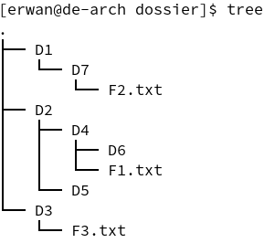
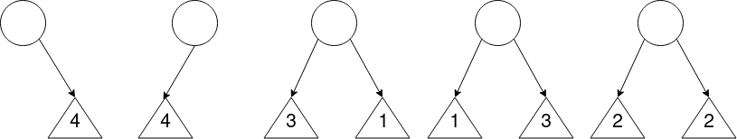

Info
Ces exercices sont également disponibles en format PDF : fiche1_vocabulaire.pdf
Exercices - Vocabulaire sur les arbres¶
Dessiner un arbre¶
Une arborescence de fichiers¶
Sur Linux, on peut lister récursivement les répertoires et fichiers du système à l'aide de la commande tree. Voici un exemple d'arborescence obtenue après exécution de cette commande :

Exercice 1
Dessinez un arbre représentant cette arborescence, en partant de l'arbre suivant :

- Quelle est la taille de cet arbre ?
- Combien y a t-il d'arêtes dans l'arbre ?
- Quelles sont les feuilles de l'arbre ?
En considérant que la profondeur de la racine est de 1 :
- Quelle est la profondeur du nœud D5 ?
- Quelle est la hauteur de l'arbre ?
- Cet arbre est-il un arbre binaire ? Pourquoi ?
Arbre d'une page HTML¶
Voici le code HTML d'une page web :
<html>
<head>
<meta charset="utf-8">
<title>Ma superbe page</title>
</head>
<body>
<h1>Mon super titre</h1>
<p>Mon super paragraphe</p>
<img src="mon_image.png" alt="ma superbe image" />
</body>
<footer>
<p>Un pied de page</p>
</footer>
</html>
L'arbre (appelé arbre DOM) représentant ce code HTML est le suivant :

Exercice 2
À votre tour, dessinez l'arbre DOM représentant la page HTML suivante :
<html>
<head>
<meta charset="utf-8">
<link href="main.css" rel="stylesheet">
<title>Pokémons</title>
</head>
<body>
<section>
<h1>Types des pokémons</h1>
<ul>
<li>FEU</li>
<li>FOUDRE</li>
<li>EAU</li>
<li>HERBE</li>
<li>NORMAL</li>
</ul>
</section>
</body>
</html>
- Quelle est la taille de l'arbre obtenu ?
- Quelle est la hauteur de l'arbre obtenu :
- Si la profondeur de la racine est de 0 ?
- Si la profondeur de la racine est de 1 ?
- Quels types d'éléments représentent les feuilles de l'arbre ?
- Si les nœuds de l'arbre étaient des instances d'une classe
Noeudcaractérisés par une étiquette (html,body, etc) et des données, quelles pourraient être ces données ? (voir la balisemetaoulinkdu code ci-dessus.)
Arbre d'une expression arithmétique¶
Voici un arbre binaire représentant l'expression arithmétique \((6 + 9) / 3\) :

Exercice 3
À votre tour, dessinez l'arbre binaire correspondant à l'expression \(\frac{5*8}{30-(8*3)}\).
- Pour quels opérateurs le positionnement (gauche, droit) des opérandes a une importance ? Pourquoi ?
- Quelle est la taille de l'arbre obtenu ?
- Quelles sont les feuilles de l'arbre ? Quelle remarque pouvez-vous faire ?
En considérant que la profondeur de la racine est de 0 :
- Quelle est la profondeur des feuilles les moins éloignées de la racine ?
- Quelle est la hauteur de l'arbre ?
Encadrement de la hauteur¶
Pour l'exercice suivant, on considérera que la profondeur de la racine d'un arbre est de 1. Voici deux arbres binaires :

Exercice 4
- Parmi ces deux arbres, lequel est un arbre filiforme ? Un arbre complet ?
- À quelle autre structure de données s'apparente un arbre filiforme ? Pourquoi ?
- Quelle est la taille de ces deux arbres ?
- Quelles sont toutes les hauteurs possibles pour une taille \(n = 5\) ?
- Établissez une relation entre la taille d'un arbre notée \(n\) et la hauteur de cet arbre notée \(h\), dans le cas où l'arbre est filiforme.
-
- Complétez l'arbre B de manière à obtenir un arbre parfait.
- Combien y a t-il de nœuds de profondeur 1, 2 et 3 dans cet arbre parfait ? En déduire combien il y aurait de noeuds de profondeur 4 et 5 dans un arbre parfait de hauteur 5 (vous pouvez dessiner un tableau).
- Établissez une relation entre le nombre de nœuds à une certaine profondeur, noté \(n_{p}\), en fonction de cette profondeur, notée \(p\).
- En déduire une expression calculant la taille \(n\) (nombre de nœuds) d'un arbre parfait en fonction de sa hauteur \(h\).
- Enfin, proposez d'abord un encadrement de la taille d'un arbre binaire notée \(n\) en fonction de la hauteur notée \(h\) (en utilisant vos réponses aux questions
5.et6.d.). À partir de l'encadrement précédent, déduire un encadrement de la hauteur d'un arbre binaire en fonction de sa taille.
Dénombrement d'arbres binaires¶
Exercice 5
Dessinez et dénombrez tous les arbres binaires possibles :
- pour une taille \(n = 1\),
- pour une taille \(n = 2\),
- pour une taille \(n = 3\),
- pour une taille \(n = 4\)
Sans les dessiner et en vous aidant des réponses précédentes, déterminez le nombre d'arbres de taille \(n = 5\).
Indice 1 exercice 5
Vous pouvez dénombrer les arbres de taille \(n = 5\) en faisant la somme des arbres dont les noeuds sont répartis de la manière suivante :
- 1 noeud racine et 4 noeuds à droite
- 1 noeud racine et 4 noeuds à gauche
- 1 noeud racine, 3 noeuds à gauche et 1 noeud à droite
- 1 noeud racine, 1 noeud à gauche et 3 noeud à droite
- 1 noeud racine, 2 noeuds à gauche et 2 noeuds à droite

En comptant le nombre de possibilités pour ces 5 cas, vous obtiendrez le nombre total d'arbres de taille \(n = 5\).
Indice 2 exercice 5
Le nombre d'arbres d'une taille \(n\) donnée peut être calculé avec le nombre de Catalan, voir page Wikipedia pour plus d'informations. (Bien sûr, ce n'est pas au programme.)
Donc, pour une taille \(n = 5\) : \(C_{5} = \frac{(2n)!}{(n+1)!n!} = \frac{10!}{6!*5!} = \frac{5040}{120} = 42\)
Il y a donc 42 arbres de taille 5.